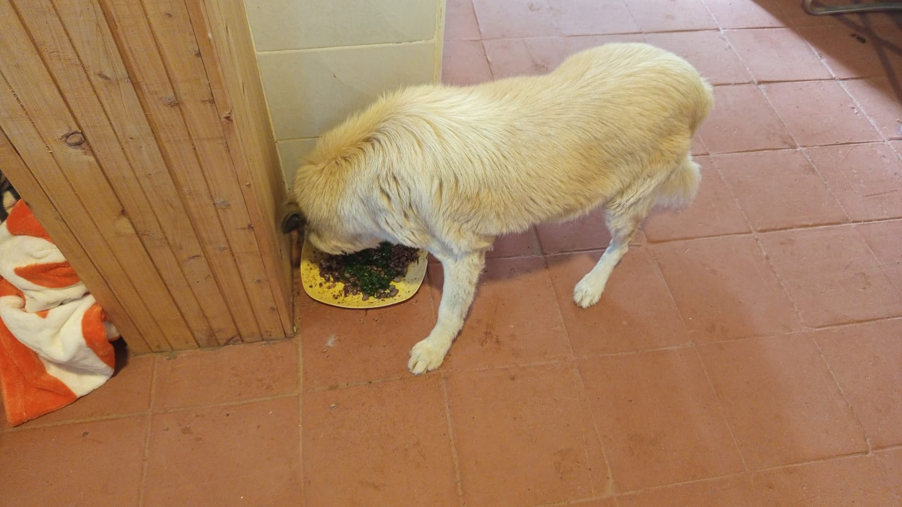

Mucheru World of Golf
Field civil, drainage, and irrigation operations across Mucheru World of Golf on Monday, 2nd November 2026 maintained active momentum across sprinkler height calibrations, drainage trench shaping, reservoir inflows, and apron debris clearance:
Golf Course Operational Highlights
Irrigation crews systematically checked and adjusted pop-up sprinkler heights so they sit flush below apron grade on Greens 6, 13, 14, 15, 16, and 17, and flush below platform surface levels on Teeboxes 6, 7, 8, 14, 16, and 17 prior to apron leveling. Laborers cleared surface debris, hardcore rocks, and murram off the green aprons to leave clean surrounds for spreading red soil. Surface water gravity inflow continued into Dam 2 and Dam 3, raising water storage levels in both geomembrane-lined reservoirs. Field labor teams placed drainage pipes into excavated trenches and leveled trench inverts for smooth gravity water outflow. Crews continued leveling and shaping the main drainage trench bed for unobstructed gravity flow, while also leveling the external main drainage trench running along the access road outside the golf site boundary.
- Pop-Up Sprinkler Height Calibration on 6 Greens: Ground crews checked and adjusted sprinkler heads on Greens 6, 13, 14, 15, 16, and 17 to ensure they sit flush below the apron profile prior to apron leveling.
- Pop-Up Sprinkler Height Adjustments on 6 Teeboxes: Technicians set and leveled pop-up sprinkler elevations flush with finished red soil grades across Teeboxes 6, 7, 8, 14, 16, and 17.
- Active Water Inflows into Dam 2 & Dam 3: Gravity surface water channels actively directed runoff into Dam 2 and Dam 3, maintaining steady replenishment across both lined basins.
- Drainage Pipe Laying & Trench Leveling for Gravity Outflow: Laborers placed drainage pipes into trenches and leveled the trench floor using guide lines to ensure continuous gravity outflow.
- Main Drainage Trench Invert Leveling & Shaping: Site crews worked inside the main drainage corridor, shaping trench sidewalls and leveling the invert bed to support free gravity drainage.
- External Road Drainage Trench Leveling: Laborers leveled the main external drainage trench running along the public road outside the golf perimeter to secure proper discharge.
- Clearing Hardcore Rocks & Murram from Green Aprons: Workers loaded stones, hardcore rocks, and murram debris into wheelbarrows from green aprons to prepare smooth ground for red soil spreading.
18-hole putting green status audit showing the latest work completed and current condition for each green as of November 2, 2026:
| Green | Current Technical & Agronomic State | Milestone Status |
|---|---|---|
| Green 1 | Pop-up sprinklers confirmed functional and operational spray coverage verified (Oct 27). | Pop-Ups Functional |
| Green 2 | Pop-up sprinklers operational with pressurized spray coverage actively watering green (Oct 28). | Pop-Ups Functional |
| Green 3 | Electric solenoid valve installed on lateral line; river sand hauled to Green 13 (Oct 26). | Solenoid Installed |
| Green 4 | Pop-up sprinklers confirmed functional and operational spray coverage verified (Oct 27). | Pop-Ups Functional |
| Green 5 | Established mature championship putting green turfgrass watered with pop-up sprinklers (Oct 24). | Turf Irrigated |
| Green 6 Today | Pop-up sprinkler heights adjusted flush below apron level prior to apron leveling (Nov 2). | Sprinkler Height Adjusted |
| Green 7 | HDPE irrigation supply trench cutting through Teebox 6 to Green 7 backfilled and covered (Oct 27). | Pipe Trench Covered |
| Green 8 | Electric solenoid valve installation and lateral pipe fitting completed on green (Oct 26). | Solenoid Installed |
| Green 9 | River sand hauled from stockpiles to Greens 12 and 16 for rootzone layering (Oct 29). | River Sand Hauled |
| Green 10 | River sand application completed across green bed with 2 tipper lorries of sand applied (Oct 29). | River Sand Applied |
| Green 11 | Pop-up sprinklers confirmed functional and operational spray coverage verified (Oct 27). | Pop-Ups Functional |
| Green 12 | River sand spread and leveled across putting green rootzone layer over sub-base (Oct 31). | River Sand Leveled |
| Green 13 Today | Pop-up sprinkler heights adjusted flush below apron level prior to apron leveling (Nov 2). | Sprinkler Height Adjusted |
| Green 14 Today | Pop-up sprinkler heights adjusted flush below apron level prior to apron leveling (Nov 2). | Sprinkler Height Adjusted |
| Green 15 Today | Pop-up sprinkler heights adjusted flush below apron level prior to apron leveling (Nov 2). | Sprinkler Height Adjusted |
| Green 16 Today | Pop-up sprinkler heights adjusted flush below apron level prior to apron leveling (Nov 2). | Sprinkler Height Adjusted |
| Green 17 Today | Pop-up sprinkler heights adjusted flush below apron level prior to apron leveling (Nov 2). | Sprinkler Height Adjusted |
| Green 18 | River sand leveled across putting green rootzone bed and apron surrounds cleared (Oct 31). | River Sand Leveled |
18-hole championship teebox status audit tracking launch platform shaping, red soil leveling, and planting readiness as of November 2, 2026:
| Teebox | Current Technical & Earthwork State | Platform Status |
|---|---|---|
| Tee 1 | Irrigation pipe trenches excavated across platform along marked survey lines (Oct 26). | Pipe Trenches Dug |
| Tee 2 | Red soil applied halfway across platform; lateral pipe trenches backfilled (Oct 27). | Red Soil Halfway |
| Tee 3 | Red soil applied, spread, and leveled across platform; lateral pipe trenches covered (Oct 27). | Red Soil Leveled |
| Tee 4 | Irrigation pipe trenches excavated across platform along marked survey lines (Oct 26). | Pipe Trenches Dug |
| Tee 5 | Red soil spread and leveled across platform; lateral pipe trenches backfilled (Oct 27). | Red Soil Leveled |
| Tee 6 Today | Pop-up sprinkler heights checked and adjusted flush below teebox platform level (Nov 2). | Sprinkler Height Adjusted |
| Tee 7 Today | Pop-up sprinkler heights checked and adjusted flush below teebox platform level (Nov 2). | Sprinkler Height Adjusted |
| Tee 8 Today | Pop-up sprinkler heights checked and adjusted flush below teebox platform level (Nov 2). | Sprinkler Height Adjusted |
| Tee 9 | Surplus red soil hauled to Teebox 7 for platform shaping and surface leveling (Oct 29). | Red Soil Hauled |
| Tee 10 | Irrigation pipe trenches excavated across platform along marked survey lines (Oct 26). | Pipe Trenches Dug |
| Tee 11 | Electric solenoid valve installed on lateral irrigation supply line (Oct 27). | Solenoid Installed |
| Tee 12 | Red soil hauled by tractor, spread, and leveled across platform; prepared for planting (Oct 31). | Ready for Planting |
| Tee 13 | Electric solenoid valve installed on lateral irrigation supply line (Oct 27). | Solenoid Installed |
| Tee 14 Today | Pop-up sprinkler heights checked and adjusted flush below teebox platform level (Nov 2). | Sprinkler Height Adjusted |
| Tee 15 | Irrigation pipe trenches excavated across platform along marked survey lines (Oct 26). | Pipe Trenches Dug |
| Tee 16 Today | Pop-up sprinkler heights checked and adjusted flush below teebox platform level (Nov 2). | Sprinkler Height Adjusted |
| Tee 17 Today | Pop-up sprinkler heights checked and adjusted flush below teebox platform level (Nov 2). | Sprinkler Height Adjusted |
| Tee 18 | Irrigation pipe trenches excavated across platform along marked survey lines (Oct 26). | Pipe Trenches Dug |
Operations Agronomy & Engineering Synthesis
Course Agronomy & Earthwork Milestones: Pop-up sprinkler elevations were adjusted flush below apron levels on Greens 6, 13, 14, 15, 16, and 17, and flush below platform grades on Teeboxes 6, 7, 8, 14, 16, and 17 to prepare clean surfaces for final apron and teebox leveling; green aprons were systematically cleared of hardcore rocks and murram; rootzones across all 18 greens and 18 teeboxes maintain stable grades.
Hydraulic & Drainage Infrastructure: Steady gravity water inflow continued into Dam 2 and Dam 3; drainage pipes were installed and trenches leveled for gravity outflow; the main drainage trench invert was shaped and leveled; and external roadside drainage trench leveling progressed along the boundary perimeter.
Field video recording documenting Monday, 2nd November 2026 operations at Mucheru World of Golf:
Field video recording capturing daily course civil works, drainage trenching, and irrigation infrastructure progress at Mucheru World of Golf on Monday, 2nd November 2026.
Sequential photographic field documentation showing reservoir water inflows, sprinkler height calibrations, apron debris clearance, and drainage trench invert leveling:

Dam 2 — Water Inflow & Reservoir Status
Aerial drone photograph of Dam 2 showing accumulated water inside the black geomembrane-lined basin and natural gravity surface inflow channels.

Dam 2 — Ground Perspective of Water Inflow Progress
Ground view across the Dam 2 reservoir basin showing rising water levels over the lined embankment with surrounding earth berms in the foreground.

Dam 3 — Sinuous Reservoir Water Storage Level
High aerial perspective of Dam 3 displaying the elongated geomembrane-lined reservoir holding calm collected water along the adjoining course corridor.

Putting Green Apron — Pop-Up Sprinkler Height Calibration
Workers checking and adjusting pop-up sprinkler heights along the perimeter of the green bed to ensure heads sit flush prior to upcoming apron leveling.

Championship Teebox — Pop-Up Sprinkler Elevation Adjustment
Ground crews digging and setting sprinkler elevations flush with the red soil surface grade across the teebox platform under site supervision.

Green Apron Preparation — Rocks, Hardcore & Debris Clearance
Laborer hauling away hardcore rocks and murram in a wheelbarrow from the apron surrounds to prepare clean ground for red soil spreading.

Drainage Network — Trench Invert Leveling for Gravity Outflow
Workers standing in the excavated drainage trench using guide lines to level the trench bed toward the course boundary to ensure continuous gravity flow.

Course Drainage — Water-Level Hose Alignment Along Trench
Worker crouching with a transparent water-level hose attached to a wooden datum peg, verifying slope gradients along the trench near the lined reservoir.

Main Drainage Trench — Excavation & Invert Shaping
Laborers working inside the deep main drainage trench cutting through the course fairway, leveling the trench bed and shaping sidewalls.

Main Drainage Canal — Aerial Alignment & Excavation View
Aerial drone photograph capturing the curved main drainage trench corridor, showing workers shaping the invert alongside stockpiles and a timber crossing.

Perimeter Drainage — Trench Leveling Along Boundary Fence
Aerial overview of workers leveling the drainage trench invert along the perimeter boundary fence and main entrance gate for gravity water discharge.

External Drainage Trench — Roadside Outflow Leveling
Workers using hand tools to level the external drainage trench running alongside the public road outside the site fence to maintain unobstructed outflow.
Chaka Farms
Dairy milking production, feed procurement, livestock parasite spraying, crop fertilization, hardware purchases, canine behavioral manners, and estate groundskeeping at Chaka Farms on Monday, 2nd November 2026:
Farm Operational Highlights
Dairy production achieved an 8.0 Litres gross harvest (5.0L morning + 3.0L evening), fully accounted for by 7.0 Litres dispatched for commercial sales (4.0L morning + 3.0L evening) and 1.0 Litre distributed for routine internal farm allocations (0.5L staff allocation to Gladys and 0.5L to Maasai), balancing the dairy ledger with 100% quantitative reconciliation strictly in Litres. Feeds purchased by Mr. Gichuhi and logged by Kamandau included 70kg Kavagara cow flour and 500g DCP salt. Ken oversaw cattle spraying with a knapsack sprayer in holding pens, fertilizer application across young crop fields with Margaret and Monica assisting later in the day, hardware purchases (nails, silicon, iron sheets), and masonry maintenance on the goat dip plunge trough. Willy conducted morning and afternoon off-leash exercise, reinforced "paw" command obedience, completed kennel manners training, and supervised morning socialization between Mali, Coby, and Logan.
- 100% Reconciled 8.0 Litre Dairy Harvest in Litres: Morning and evening milking yielded 8.0 Litres gross harvest, fully accounted for by 7.0 Litres commercial sales and 1.0 Litre in internal farm allocations (Gladys 0.5L, Maasai 0.5L) with zero variance.
- Commercial Milk Dispatches & Feed Purchases: Commercial sales absorbed 4.0 Litres from morning milking and 3.0 Litres from evening milking; feed purchases included 70kg Kavagara cow flour and 500g DCP salt.
- Cattle Spraying for External Parasite Prevention: Attendants utilized a pressurized knapsack sprayer to spray dairy and beef cattle in holding pens against ticks and biting flies.
- Crop Field Fertilizer Application: Ground staff applied fertilizer along young crop rows, with Margaret and Monica joining the farm team later in the day to assist with field fertilization.
- Hardware Purchases for Estate Maintenance: Essential building and repair materials were procured, including roofing nails with rubber washers, silicone sealant tubes, and iron sheets.
- Canine Behavioral Manners & Socialization Drills: Willy oversaw kennel cleaning, "paw" command conditioning, kennel manners doorway drills, and socialization among Mali, Coby, and Logan.
- Goat Dip Plunge Trench Maintenance: Masonry labor progressed at the goat dip plunge trough, with workers chipping and preparing concrete walls and steps for durable livestock dipping.
Official milking production and distribution reconciliation for Monday, 2nd November 2026, accounting for all commercial sales and on-farm allocations:
| Category / Transaction | Morning Session | Evening Session | Daily Total |
|---|---|---|---|
| Gross Milk Harvested | 5.0 Litres | 3.0 Litres | 8.0 Litres |
| Commercial Milk Sales (Dispatched) | 4.0 Litres | 3.0 Litres | 7.0 Litres |
| Internal Farm Allocation — Gladys (Staff) | 0.5 Litres | 0.0 Litres | 0.5 Litres |
| Internal Farm Allocation — Maasai | 0.5 Litres | 0.0 Litres | 0.5 Litres |
| Internal Farm Allocation — Goat Kids | 0.0 Litres | 0.0 Litres | 0.0 Litres |
| Total Volume Accounted For | 5.0 Litres | 3.0 Litres | 8.0 Litres (100% Reconciled) |
Dairy Accounting & Farm Reconciliation Note
Total gross milk harvested of 8.0 Litres (5.0L morning + 3.0L evening) is 100% accounted for by 7.0 Litres dispatched for commercial sales (4.0L morning sale + 3.0L evening sale) and 1.0 Litre in routine internal farm allocations (0.5L staff allocation to Gladys and 0.5L to Maasai). In accordance with reporting rules, milk volumes are recorded strictly in Litres (never kilograms), and Maasai is designated strictly as Maasai with zero discrepancy. All yields reconcile perfectly with zero variance.
Daily behavioral conditioning routines, health protocols, feed procurement, and estate groundskeeping conducted on Monday, 2nd November 2026:
- Kennel Stall Cleaning & Hygiene Standards: Willy supervised thorough morning kennel washing, floor scrubbing, and stall sanitation to maintain healthy living spaces.
- Paw Command Conditioning Drills: Handlers conducted structured obedience drills reinforcing the "paw" command with positive reinforcement and compliance verification.
- Morning & Afternoon Off-Leash Farm Walks: Handlers completed two separate off-leash exercise sessions across the farm grounds in the morning and afternoon, supporting physical fitness.
- Canine Pack Socialization (Mali, Coby & Logan): Handlers facilitated controlled morning socialization between Mali, Coby, and Logan, reinforcing pack harmony and calm social behavior.
- Kennel Manners Conditioning: Handlers reinforced doorway patience and stall etiquette, ensuring dogs remain calm and disciplined before leaving or entering sleeping quarters.
- Estate Compound Cleanliness & Farm Support: Margaret and Monica maintained compound cleanliness in the morning before transitioning to the crop fields to assist with fertilizer application.
- Dairy Nutritional Supplements: Livestock feeds purchased by Mr. Gichuhi and logged by Kamandau included 70kg Kavagara cow flour and 500g DCP salt for daily cattle nutrition.
Field video recording documenting Monday, 2nd November 2026 canine behavioral conditioning routines and kennel manners under Willy:
Structured kennel manners conditioning under Willy, verifying dogs demonstrating patience, calm stall manners, and prompt obedience to doorway release commands.
Sequential photographic field documentation showing crop fertilization, cattle parasite spraying, hardware procurement, and goat dip plunge trough masonry:

Crop Production — Field Fertilizer Application
Chaka Farms field workers in green overalls applying fertilizer by hand from containers along young crop rows across the agricultural field.

Livestock Husbandry — Cattle Spraying Against Parasites
Farm attendant using a knapsack sprayer to spray dairy and beef cattle in the wooden holding pen for tick and external parasite prevention.

Farm Supplies — Hardware Purchase for Estate Maintenance
Purchased box containing roofing nails with rubber washers, silicone sealant tubes, and fasteners for ongoing farm maintenance and structural repairs.
.jpeg)
Livestock Infrastructure — Goat Dip Concrete Plunge Trench Works
Worker using a hammer and chisel to chip and dress the concrete masonry walls and steps of the goat dip plunge trench at Chaka Farms.
Kabete Residence
Concrete moisture curing, black polythene membrane installation, structural drainage tunnel excavation, gate security alert logging, and domestic pet care at Kabete Residence on Monday, 2nd November 2026:
Residence Operational Highlights
Continuous concrete curing of the shutter slab at the SQ fireplace progressed with initial water ponding, after which workers spread heavy black polythene sheeting across the entire slab to retain moisture and ensure proper curing strength. Structural drainage works advanced with two simultaneous excavations: workers dug the deep drainage tunnel behind the SQ building and cold room, and laborers excavated the drainage tunnel behind the irrigation water storage tank on the sloping bank. In domestic pet care, Ajabu the Golden Retriever enjoyed his nutritious evening meal indoors, while resident cats Aiko and Reo dined peacefully together indoors (Mocha was absent during the meal). A facility alert was logged regarding the backup wireless alarm transmitters at the security gate, which are currently non-functional and awaiting technical servicing.
- Concrete Shutter Slab Water Curing at SQ Fireplace: Ground workers sprayed water across the cast concrete shutter slab at the SQ fireplace to support the continuous hydration curing cycle.
- Black Polythene Membrane Covering for Moisture Retention: Laborers spread heavy-duty black polythene paper across the moist slab surface to trap moisture and prevent premature drying.
- Drainage Tunnel Excavation Behind SQ & Cold Room: Excavation crews wearing safety gear dug deeply along the rear wall behind the SQ and cold room to construct the drainage tunnel.
- Drainage Tunnel Excavation Behind Irrigation Water Tank: Laborers excavated a deep drainage channel through red soil on the bank behind the steel-framed irrigation water storage tank.
- Security Gate Backup Alarm Transmitter Operational Alert: Technicians noted that the wireless backup alarm transmitters at the security gate are not working, flagging them for prompt technical repair.
- Domestic Pet Care — Ajabu Evening Meal: Ajabu the Golden Retriever was well cared for and enjoyed his balanced evening dinner served on the tiled floor indoors.
- Domestic Pet Care — Resident Cats Aiko & Reo Dining: Resident cats Aiko and Reo ate their evening meals indoors together, while third resident cat Mocha was absent during feeding.
Sequential photographic field documentation showing shutter slab curing, black polythene moisture membrane covering, drainage tunnel excavations, gate backup alarm alert, and domestic pet care:

Fireplace Structure — Concrete Shutter Slab Water Curing
Attendant using a hose to spray water continuously across the concrete shutter slab at the SQ fireplace area to maintain proper hydration during curing.

Curing Protection — Laying Black Polythene Paper Over Slab
Workers rolling and spreading heavy-duty black polythene sheeting across the wetted concrete shutter slab to trap moisture for the curing process.

Moisture Retention — Black Polythene Covering Across SQ Slab
Black polythene sheeting fully spread over the cured concrete slab at the SQ fireplace, preventing premature evaporation and ensuring structural strength.

Shutter Slab Curing — Complete Polythene Membrane Protection
Alternative perspective showing the entire surface area of the SQ fireplace concrete slab sealed under black polythene membrane for moisture retention.

Estate Drainage — Trench Excavation Behind SQ & Cold Room
Workers in safety vests and helmets digging a deep drainage tunnel trench through red soil along the rear retaining wall of the SQ building and cold room.

Water Infrastructure — Drainage Tunnel Behind Irrigation Tank
Laborers excavating a deep drainage trench in red earth on the sloping embankment behind the steel frame enclosure of the irrigation water storage tank.

Estate Security — Gate Backup Alarm Remote Transmitters
Two wireless backup alarm transmitter remotes with pull-out antennas on the office desk, logged as non-functional and awaiting technical servicing.

Domestic Pet Care — Ajabu the Golden Retriever Evening Meal
Ajabu the Golden Retriever eating his nutritious evening dinner from a dish on the tiled floor indoors at Kabete Residence.

Domestic Pet Care — Resident Cats Aiko & Reo Dining Indoors
Resident cats Aiko and Reo eating their evening food from stainless steel bowls indoors, with third cat Mocha absent from the feeding area.